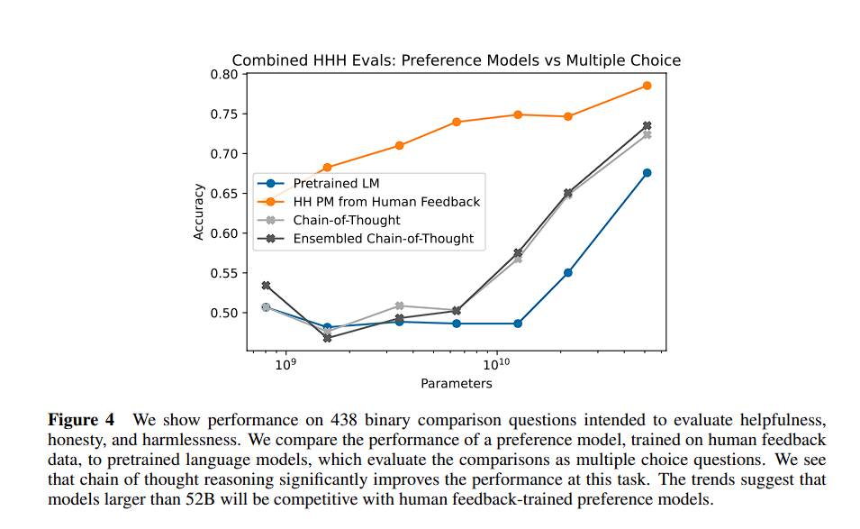

RLHF-从基础到Claude中的应用探索
RLHF-从基础到Claude中的应用探索
强化学习基础知识：
马尔可夫决策过程（Markov Decision Processes,MDPs）
例行回顾，但不是核心内容

MDPs 简单说就是一个智能体（Agent）采取行动（Action）从而改变自己的状态（State）获得奖励（Reward）与环境（Environment）发生交互的循环过程。
MDP 的策略完全取决于当前状态（Only present matters），这也是它马尔可夫性质的体现。
其可以简单表示为：
基本概念
- ：有限状态 state 集合，s 表示某个特定状态
- ：有限动作 action 集合，a 表示某个特定动作
- Reward ：表示 agent 采取某个动作后的即时奖励，它还有 , $R(s) $等表现形式，采用不同的形式，其意义略有不同
- 状态转移函数 ：表示在状态执行动作之后到达状态的概率
- 智能体的策略（Policy）通常用字母表示。策略 是一个函数，表示在输入状态情况下采取动作的概率。
- Transition Model ： Transition Model, 根据当前状态 和动作 预测下一个状态 ，这里的 表示从 采取行动 转移到 的概率
强化学习的本质是学习从环境状态到动作的映射（即行为策略）。而仅仅使用立即回报r(s,a)肯定是不够的(一个策略π的长期影响才是至关重要的).
回报（Return）：
与 折扣率（discount）： U 代表执行一组 action 后所有状态累计的 reward 之和，即我们所要求的回报，但由于直接的 reward 相加在无限时间序列中会导致无偏向，而且会产生状态的无限循环。因此在这个 Utility（效用） 函数里引入 折扣率这一概念，令往后的状态所反馈回来的 reward 乘上这个 discount 系数，这样意味着当下的 reward 比未来反馈的 reward 更重要，这也比较符合直觉。定义
所以从第时刻状态开始，直到终止状态时，所有奖励的衰减之和称为回报 （Return），公式如下
由于我们引入了 discount，可以看到我们把一个无限长度的问题转换成了一个拥有最大值上限的问题。
强化学习的目的是最大化长期未来奖励，即寻找最大的 U。（注：回报也作 G 表示，这里我们用 ）
基于回报（return），我们再引入两个函数
- 状态价值函数：，意义为基于 t 时刻的状态 s 能获得的未来回报（reward ）的期望
- 动作价值函数：，意义为基于 t 时刻的状态 s，选择一个 action 后能获得的未来回报（return）的期望
状态价值函数和动作价值函数之间的关系：在使用策略中，状态的价值等于在该状态下基于策略采取所有动作的概率与相应的价值相乘再求和的结果：
使用策略时，状态下采取动作的价值等于即时奖励加上经过衰减后的所有可能的下一个状态的状态转移概率与相应的价值的乘积：
价值函数用来衡量某一状态或动作 - 状态的优劣，即对智能体来说是否值得选择某一状态或在某一状态下执行某一动作。
引出价值函数，对于获取最优的策略 Policy 这个目标，我们就会有两种方法：
- 直接优化策略 或者 使得回报更高；
- 通过估计 value function 来间接获得优化的策略。道理很简单，既然我知道每一种状态的优劣，那么我就知道我应该怎么选择了，而这种选择就是我们想要的策略。
当然了，还有第三种做法就是融合上面的两种做法，这也就是以后会讲到的 actor-critic 算法。
所以最开始的PPT的图也可以这样表示：

Value Function 价值函数
从数学的角度，我们常常会用一个函数 来表示一个状态的价值，也可以用 来表示状态及某一个动作的价值。我们上面的例子就是来评估某一个状态下动作的价值，然后根据价值做出判断。实际上我们这里也是有策略的，我们的策略更简单：
1 | if 某一个决策的价值最大： |
这就是价值函数的意义。在后面的文章当中，我们还会发现，其实我们还可以同时使用策略加价值评估的方法来联合给出决策，这种算法就是所谓的 「Actor-Critic」 算法
为什么引出Value Function？
我们是为了得到最优策略，所以想通过评估状态的价值来引导决策。在MDP的世界，每个状态下的价值是确定的，即存在一个唯一的值来表示某一个状态。也就是说存在一个和策略无关的值来表示某一个状态。然后我们就可以利用这个状态的价值来进行决策。也就是说这里有一个先有鸡还是先有蛋的问题。我们是先有价值，还是先有策略。这里当然是先有价值，然后再进行决策。
但是，很显然，我们很难得到这个Value Function。要么是因为我们不是完全可观察的环境，要么就是我们根本无法计算这个Value Function。我们唯一能做的就是去估计这个Value Function。
怎么估计？
唯一的方法就是反复试验。
但是试验的过程中我们肯定得采取某一个策略，否则试验进行不下去。因此我们得到的reward都是在这个策略之下得到的，所以我们得到的value function显然也就是在这个策略下得到的value function。这只是实际得到的value function。
因此，我们就想，如果使用不同的策略进行无数次的实验，然后把最大的value function作为真正的value function。这样可以吗？这样当然可以啊。因为最大的value function肯定是唯一的。我们保证了唯一性，也就是可以基于这个来做判断。而使用最大值其实也是显而易见的，代表这这个状态的最大可能。既然每个状态的最大可能价值知道了，我们也就可以根据这个最大可能价值来做判断，得到的策略也就是最优策略Optimal Policy。这就实现了我们的初衷：得到状态的价值Value Function。
Bellman方程
没错，就是算法课讲的那种Bellman方程
在上文我们介绍了Value Function价值函数，所以为了解决增强学习的问题，一个显而易见的做法就是----
我们需要估算Value Function
Value Function从分析上是可以评估出来的，那具体该怎么评估呢？
我们下面将不得不引入点数学公式，虽然也会非常好理解。
还记得回报Result的基本定义吗？就是所有Reward的累加（带衰减系数discount factor）
那么Value Function该如何定义？也很简单，就是期望的回报啊！期望的回报越高，价值显然也就越大，也就越值得去选择。用数学来定义就是如下：
接下来，我们把上式展开如下：
因此，
在上式的最后一个等号中，一方面，即时奖励的期望正是奖励函数的输出，即 。另一方面，等式中剩余部分 可以根据从状态出发的转移概率得到，即可以得到
上面这个公式就是Bellman方程的基本形态。从公式上看，当前状态的价值和下一步的价值以及当前的反馈Reward有关。
我们可以写成矩阵的形式并求解析解
以上解析解的计算复杂度是，其中是状态个数，因此这种方法只适用很小的马尔可夫奖励过程。求解较大规模的马尔可夫奖励过程中的价值函数时，可以使用动态规划（dynamic programming）算法、蒙特卡洛方法（Monte-Carlo method）和时序差分（temporal difference）
它表明Value Function是可以通过迭代来进行计算的
强化学习算法
人类对齐
在大语言模型的预训练和有监督微调的过程中，主要训练目标是根据上下文内容来预测下一个词元。但是，这一过程并未充分考虑人类的价值观或偏好，可能导致大语言模型从数据中学习到不符合人类期望的生成模式。为了规避这些潜在风险，研究人员提出了“人类对齐”这一关键概念，旨在保证大语言模型的行为与人类期望和价值观相一致。与预训练和指令微调不同，人类对齐需引入全新的评估标准，如有用性、诚实性和无害性。
基于人类反馈的强化学习-RLHF
概述
为了加强大语言模型与人类价值观的一致性，基于人类反馈的强化学习旨在利用收集到的人类反馈数据指导大语言模型进行微调，从而使得大语言模型在多个标准（例如有用性、诚实性和无害性）上实现与人类的对齐。
RLHF提出自论文https://arxiv.org/pdf/1706.03741，由OpenAI联合Google DeepMind一起推出，核心步骤如下图所示：
再之后，OpenAI团队通过下述两篇论文进一步阐述了RLHF
Fine-Tuning Language Models from Human Preferences (Zieglar et al. 2019)
在Reward model的训练中，我们需要人的参与，human labelers给policy模型生成的文本进行选择「比如在四个答案选项(y0，y1，y2，y3)中选择一个最好的」，这个选择作为reward model学习的标签
Reward mode训练好后，那么在训练policy model时，Reward model便可以完全取代human labeler选择，这种基于偏好的选择作为信号传给policy model，再利用OpenAI默认的策略优化算法PPO来训练
Learning to summarize with human feedback (Stiennon et al., 2020)
OpenAI团队在2020年9月的这篇论文里通过RLHF的方式训练语言模型，然后让其做摘要任务
1 收集人类对摘要的偏好数据，比如针对同一篇帖子的两个不同摘要，人类标注出哪个摘要更好
2 训练一个奖励函数，使其可以越发准确的判断：针对同一篇帖子，人类更喜欢的那个摘要是哪个摘要
3 有了reward，接下来便可以基于让RM给出的分值最大化的前提之下，通过PPO算法优化模型的策略，且为避免RM过于绝对，还给RM加了个惩罚项，防止迭代中的策略与初期的SFT策略偏离太远
基本思想
RLHF 首先需要收集人类对于不同模型输出的偏好，然后使用收集到的人类反馈数据训练奖励模型，最后基于奖励模型使用强化学习算法（例如Proximal Policy Optimization, PPO ）微调大语言模型。
这里以OpenAI论文提出的RLHF思路为例：（原文：https://arxiv.org/pdf/2203.02155）
监督微调
为了让待对齐语言模型具有较好的指令遵循能力，通常需要收集高质量的指令数据进行监督微调。
奖励模型训练
使用人类反馈数据训练奖励模型，具体来说，首先使用语言模型针对任务指令生成一定数量的候选输出。随后，邀请标注员对于输出文本进行偏好标注，这个标注过程可以采用多种形式，其中最常用的是对候选文本进行排序标注，这样可以有效减少多个标注员之间的不一致情况。最后，使用人工标注的偏好数据进行奖励模型的训练，使其能够建模人类偏好。

一个比较有趣的观测是，奖励模型的大小最好是跟生成模型的大小相近，这样效果会比较好。一种比较直观的解释就是，要理解生成模型的输出内容，这份理解能力所需要的模型参数规模就得恰好是跟生成模型相近才能做到（当然，如果奖励模型规模更大那应该更没问题，但理论上没必要）。
强化学习训练
在这一步骤中，语言模型对齐被转化为一个强化学习问题。具体来说，待对齐语言模型担任策略实施者的角色（称为策略模型），它接收提示作为输入并返回输出文本，其动作空间是词汇表中的所有词元，状态指的是当前已生成的词元序列。奖励模型则根据当前语言模型的状态提供相应的奖励分数，用于指导策略模型的优化。
然后我们基于如下步骤计算得到奖励（reward）：首先，基于前面提到的预先富集的数据，采样prompt输入，同时丢给初始的语言模型和我们当前训练中的语言模型（policy），得到两个模型的输出文本y1，y2。然后用奖励模型RM对y1、y2打分，判断谁更优秀。显然，打分的差值便可以作为训练策略模型参数的信号，这个信号一般通过KL散度来计算“奖励/惩罚”的大小。显然，y2文本的打分比y1高的越多，奖励就越大，反之惩罚则越大。这个reward信号就反映了文本整体的生成质量。有了这个reward，便可以根据RL算法来更新模型参数了。
目前多个组织找到的可行方案是使用策略梯度强化学习 (Policy Gradient RL) 算法、近端策略优化 (Proximal Policy Optimization，PPO) 微调初始 LM 的部分或全部参数，算法就不再展开。
总结
RLHF在OpenAI的系列LLM中的应用最为典型，所以这一部分选择的也更多的是OpenAI的RLHF思路
总的来看，基本流程如下：
更详细的，如：
基本思路上，可以理解为一个从有监督到无监督的训练方案，其中人工需求还是会占到相当大的一部分
RLAIF 与Claude
https://arxiv.org/pdf/2212.08073
概述
Claude自从问世以来，一直被视为ChatGPT或GPT4的最大竞争对手，而其在各类榜单中也确实的常居老二，其训练方式和ChatGPT类似，但与ChatGPT最大的不同在于：
- ChatGPT用人类偏好训练RM再RL(即RLHF)
- Claude则基于AI偏好模型训练RM再RL(即RLAIF)
说白了，整个从SFT到RLHF或RLAIF的训练中，ChatGPT只有最后1/3摆脱了人工参与的训练，而Claude则希望超过1/2摆脱人工参与的训练
具体而言
- 其在RL阶段，Claude从阶段一的STF模型中采样一个模型来评估两个response中哪一个更好
- 然后从这个AI偏好数据集中训练一个偏好模型。然后我们使用偏好模型作为奖励信号进行RL训练，即使用“来自AI反馈的RL”(RLAIF)，而非ChatGPT所使用的基于人类反馈的RL(RLHF)
Claude为何选择RAIHF而非RLHF
虽然从某种意义上说，从人类反馈中进行强化学习的工作比如InstructGPT，已经朝着规模化监督的方向迈出了一步，因为强化学习中的奖励信号实际上来自基于人类偏好而训练出来的AI偏好模型(PM)，而不是直接来自人类监督，且RLHF通常使用数以万计的人类偏好标签
之前的RLHF训练出来的模型，会经常拒绝一些争议的问题，而其中不少只是看起来不安全，但实际上对专业人士而言是有帮助的，比如如何生产香烟(当然，这类问题后来在GPT4时已经得到了一定的解决)，即便真要拒绝回答也得给出令人比较信服、或避免让人产生不适的理由，即要做高情商的婉拒
Claude中人类对齐的训练模式
如下图所示，训练过程有两个阶段
- 图中上半部分是监督微调阶段 (类似ChatGPT的SFT阶段 )
- 图中下半部分是RAIHF阶段 (通过AI排序而非人工排序数据集训练出来的偏好模型PM的指引下迭代模型策略 )
(监督阶段)批判→修改→监督学习
我们首先使用一个只提供实用信息的AI助手来生成对harmfulness prompts的responses。这些最初的responses通常会相当有害和有毒。然后，我们要求模型根据constitution中的一项原则对其response进行批判，然后根据批判对原始response进行修正我们按顺序反复修改responses，每一步都根据constitution中随机抽取到的原则。之后，我们对最终修订的回答进行监督学习，微调一个预训练的语言模型
(RL阶段)AI比较评估→偏好模型→强化学习
这个阶段模仿RLHF，除了我们用“AI反馈”(即“RLAIF”)取代人类对无害的偏好，其中AI根据一套constitutional原则评估responses。正如RLHF将人类偏好提炼成一个单一的偏好模型(PM)，在这个阶段，我们将LM对一组原则的解释提炼回一个混合的人类/AI PM(我们使用人类标签来表示有益，但只使用AI标签来表示无害)- 首先，我们从第一阶段开始使用通过监督学习(SL)训练的AI助手，并使用它对有害提示数据集中的每个提示生成一对responses
- 其次，我们将每个prompt和配对制定为一个多选题，根据constitutional principle询问哪种回答是最好的。这产生了一个AI生成的无害偏好数据集，我们将其与人类反馈帮助数据集混合在一起
- 接着，在这些比较数据上训练一个偏好模型PM，从而得到一个可以为任何给定样本分配分数的PM
- 最后，我们通过RL对在该PM指引下的阶段一的SL模型进行微调，从而得到由RLAIF训练的策略
RLAIF实验细节
强化学习方法
在相同的数据和训练配置下，对比多种强化学习方法，实验发现，RL-CAI (RLAIF) 优于 RLHF的两种方案，而增加了思维链（CoT）的 RL-CAI 在有用性维度中稍负于RLCAI，但在无害性维度提升明显。
由于增加了思维链（CoT）的归一化概率，模型偏好倾向过度自信，导致偏好打分比较极端（靠近0 %或者 100 %），根据尝试结果，最终将概率限制在 40 %- 60% 区间效果最佳。
蓝色线（Helpful RLHF）：仅用有效性数据训练，人类反馈强化学习。有效性最强，但是无害性很差。
橙色线（HH RLHF）：同时用有效性（Helpful）和无害性（Harmless）数据训练，人类反馈强化学习。有效性减弱，无害性不足。
灰色线（RL-CAI）：RLAIF 模型，通过 AI 反馈的强化学习，有效性减弱，无害性最强。
黑色线（RL-CAI w/ CoT）：RLAIF模型，通过AI反馈的强化学习 + 思维链（Chain-of-Thought, CoT），有效性略弱，无害性显著强。
Critique 的必要性
RLAIF 在监督学习阶段，通过多轮条令矫正 Critique → Revision 方式生成相对无害的回答 Critique 过程的必要性进行实验，看能否简化为仅 Revision 的方式。
上图纵坐标为 52B 的偏好模型的无害性打分，分数越高说明 Revision 后生成的回答越好。可以看出在不同模型参数量和不同 Revision 轮数下， Critique 都能提升模型的无害化得分，在小模型上表现更显著。
AI Feedback 的准确性
RLAIF相对于RLHF的最大区别在于强化学习流程中的反馈信号。前者来源于标注样本中的人类偏好，后者来源于大规模语言模型理解无害化原则后，提供的AI Feedback，因此需要评估后者的信号质量。

上图说明了对比偏好模型的准确率，测试集合为 438 个单选问题对，评估的 HHH 标准表示有效性（Helpful）、可靠（Honest）和无害性（Harmless）。实验显示，通过使用思维链 prompting，提升了 AI 的推理能力 ；随着参数量增大，思维链可以将准确率效果提升到媲美人工语料训练的效果。
- 蓝色线：原始预训练语言模型
- 橙色线：拟合人工标注的偏好数据
- 灰色线：拟合思维链 + 单个选择原则的 AI 偏好数据
- 黑色线：拟合思维链 + 多个选择原则集成的 AI 偏好数据
RLHF 与 RLAIF
RLHF 的优点和缺点
RLHF 非常适合用于训练人工智能系统，以应对内容审核等场景，在这些场景中，对于构成仇恨言论、欺凌和其他不良行为的语言，人类比人工智能有更好的判断力。利用人类的偏好，团队可以根据人类的直觉来训练人工智能系统，这比简单地识别特定单词或短语要复杂得多。
人类的反馈也很容易被其他人理解，从而使人工智能系统更加透明，因此也更值得最终用户信赖。在人工智能越来越不被信任、越来越无处不在的今天，透明度和可解释性对于确保人工智能解决方案在部署后的实用性至关重要。
然而，正如一些人工智能团队所了解到的那样，RLHF 并非没有缺陷。对于需要具有特定知识和技能的领域专家提供反馈的场景来说，这一过程很快就会变得既昂贵又耗时。这也会给扩展带来困难，因为随着数据量的增加，这些成本也会随之增加，而可用的人类专业知识却依然稀缺。
RLAIF 的优点和缺点
RLAIF 特别适用于需要遵守特定规则或原则的场景，例如微调 LLM，使其成为销售部门的人工智能助手。
由于减少了人工投入，利用 RLAIF 通常可以获得以下好处：
- 效率： RLAIF 在时间和资源方面的效率更高，因为它不依赖于人工反馈，而人工反馈的获取可能很慢，成本很高
- 一致性： 人工智能生成的反馈会更加一致，更少受到人为偏见的影响，从而可能带来更稳定的培训
- 可扩展性： RLAIF 可以更好地扩展到需要大量训练数据的任务，或者在人类专业知识有限或不可用的情况下
- 自动化： RLAIF 可以实现自动化，从而减少人类持续参与训练过程的需求
不过，仅依靠 RLAIF 来微调模型的人工智能团队在理解复杂性和细微差别方面的优势也会低于 RLHF。RLAIF 的成功在很大程度上还取决于用于创建反馈的模型，而为这一过程选择正确的模型很可能会在节省资源和浪费资源之间产生差异。
此外，使用这种方法训练模型所需的数据量可能会很大，尤其是对于复杂和特定领域的用例，使用正确的 LLM 生成反馈最终可能会增加成本。
现阶段对比
Anthropic的研究
在https://arxiv.org/pdf/2212.08073这篇论文中，Anthropic对不同训练方式进行了打分
评估方式是人工对开放对话中的模型输出进行偏好打分，模型越靠右表示结果越有效，越靠上表示结果越无害。4 条不同颜色的线分别代表不同的强化训练方法，线上从左到右的点代表不同训练阶段（checkpoint），可以看出 RLAIF 相对于 RLHF 而言，在接近的有效性水平下，表现出显著更强的无害性。
- 蓝色线（Helpful RLHF）：仅用有效性数据训练，以人类反馈来强化学习。有效性最强，但是无害性很差；
- 橙色线（HH RLHF）：同时用有效性（Helpful）和无害性（Harmless）数据训练，以人类反馈来强化学习。有效性减弱，无害性不足；
- 浅灰色线（RLAIF）：通过 AI 反馈的强化学习，有效性减弱，无害性最强；
- 深灰色线（RLAIF w/ CoT）：通过 AI 反馈的强化学习 + 思维链（Chain-of-Thought, CoT），有效性略弱，无害性显著强。
Google的研究
谷歌这篇论文对二者进行了对比：https://arxiv.org/pdf/2309.00267
谷歌观察到，RLAIF 和 RLHF 策略分别在 71% 和 73% 的时间里比监督式微调（SFT）基准更受人类青睐，而这两个胜率在统计学意义上没有显著差别。
当被要求直接比较 RLAIF 与 RLHF 的结果时，人类对两者的偏好大致相同。这些结果表明 RLAIF 可以替代 RLHF，其不依赖于人类标注，并且具有良好的扩展性。
此外，该团队还研究了能尽可能使 AI 生成的偏好与人类偏好对齐的技术。他们发现，通过 prompt 为 LLM 提供详细的指示并借助思维链推理能提升对齐效果。
他们观察到了出乎意料的现象：少样本上下文学习和自我一致性（采样多个思维链原理并对最终偏好进行平均的过程）都不能提升准确度，甚至会导致准确度下降。
他们还进行了缩放实验，以量化打标签 LLM 的大小与偏好示例数量之间的权衡。
Reference
RLHF&RLAIF blogs：
https://blog.csdn.net/v_JULY_v/article/details/134242910
https://wqw547243068.github.io/rlhf
https://www.antarina.tech/posts/notes/articles/笔记RLHF_1.html
https://labelbox.com/blog/rlhf-vs-rlaif/
https://www.aizws.net/news/detail/1280
https://juejin.cn/post/7199449878903603260
Blog about Claude：
https://medium.com/version-1/analysis-of-claude-an-ai-assistant-by-anthropic-1e4aa48c5fe3
Blog about ChatGPT：
https://blog.csdn.net/v_JULY_v/article/details/128579457
Paper：
https://arxiv.org/pdf/2203.02155
https://arxiv.org/pdf/1706.03741
https://arxiv.org/pdf/2402.12366
https://arxiv.org/pdf/2407.16216
https://arxiv.org/pdf/2312.14925
https://arxiv.org/pdf/2212.08073
https://arxiv.org/pdf/2309.00267
https://alignmentsurvey.com/uploads/AI-Alignment-A-Comprehensive-Survey-CN.pdf
Repositories：